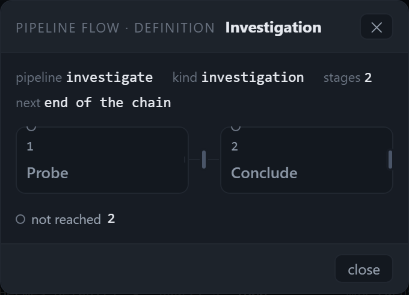
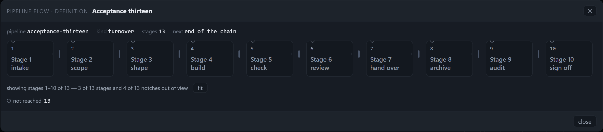
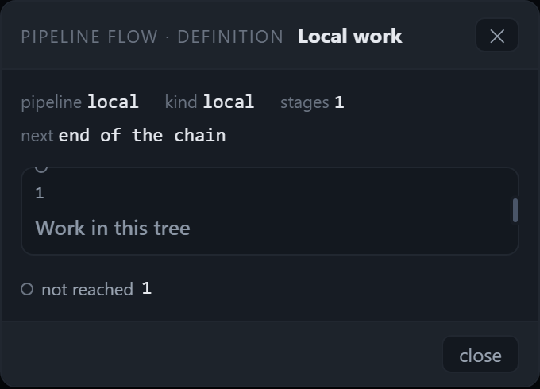
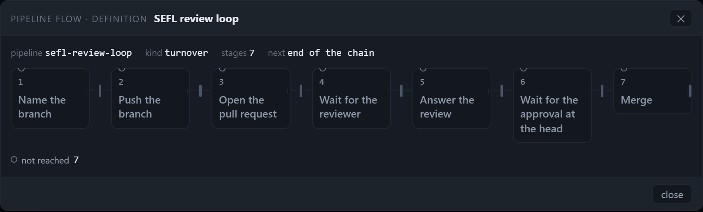
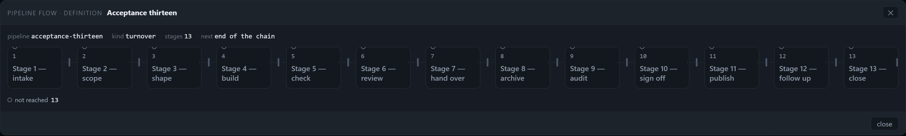
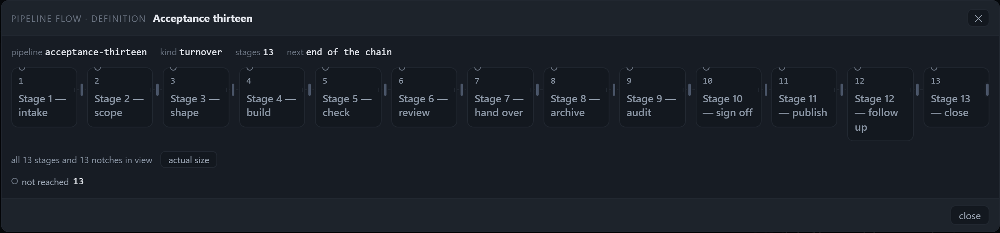

The dialog, sized to its drawing
One number per case — the drawing's painted area as a share of the dialog's area — at 1280 and 1824 for 1, 2, 7 and 13 stages, plus the type floor and the scroll box. Shot on the panel this branch builds.
The round's three asks. The dialog should be as big as the picture it holds — a one-stage flow is a small panel, not a 1120 px frame — and a drawing that fits should not carry an inner scrollbar. The stage title should be 13 px or more at real weight, the ordinal legible, and nothing on screen below 11 px. The apology caption under the facts should go: if a definition has no marks, the legend says it once or says nothing, the legend should list only the states actually present, and the header should stop saying EDITING over a surface that offers no edit.
What was there before
- A fixed 1120 px frame.
.pmodal-card { width: min(1120px, 96vw) }at every stage count. A one-stage definition drew a 240 px column inside it: 16.6% of the card was drawing. - A 4 px scrollbar.
.pflow-scrollcarriedpadding: 0 2px 6px; the horizontal padding counts towardscrollWidth, so a drawing that fitted its track still produced a scrollbar. - A caption explaining the absence of marks.
openPipelineFlow()passed a note — "each notch is the exit check that ends the stage before it — no mark is set, because a definition has no position until a task enters a stage" — under the facts, saying in prose what the picture and the legend already say. - Four legend keys always. `done`, `current`, `refused` were listed with no count on a definition, so the
reader was offered three states that are not on the picture, and the header said EDITING
because the mode is called
edit.
The number
Drawn area is the union of the painted boxes that carry the drawing — stage cards, their gate notches, loop
arcs, the legend and the count row — clipped to the scroller's client box (a stage the browser hides is not drawn) and
to the card. Dialog area is the card's own box. Both in CSS pixels, read from the live page by
tools/verify-pipeline-dialog-size.mjs. The "old frame" column is the same drawing measured with
width: min(1120px, 96vw) forced back onto the card, so before and after are the same picture.
| viewport | stages | card | track | column | hidden | drawn | old frame |
|---|---|---|---|---|---|---|---|
| 1280×800 | 1 | 340 × 244 | 314 | 314 | 0 | 27.8% | 16.6% |
| 1280×800 | 2 | 340 × 244 | 314 | 144 | 0 | 26.1% | 25.6% |
| 1280×800 | 7 | 854 × 257 | 828 | 96 | 0 | 29.1% | 28.2% |
| 1280×800 | 13 | 1229 × 269 | 1203 | 96 | 357 | 35.4% | 35.1% |
| 1824×900 | 1 | 340 × 244 | 314 | 314 | 0 | 27.8% | 16.6% |
| 1824×900 | 2 | 340 × 244 | 314 | 144 | 0 | 26.1% | 25.6% |
| 1824×900 | 7 | 854 × 257 | 828 | 96 | 0 | 29.1% | 28.2% |
| 1824×900 | 13 | 1586 × 240 | 1560 | 96 | 0 | 31.3% | 30.8% |
Read the card column, not only the share. The share is flat — 26–35% — because a quarter to a third of
any dialog is its bar, facts and footer, and that chrome does not shrink with the picture. What changed is that the
card no longer spends 780 px of width on nothing: one stage draws a 340 px panel instead of a 1120 px frame
(the 16.6% → 27.8% row), seven take 854, thirteen take 1586. The 13-stage case at 1280 is wider than the viewport
allows, so the card stops at 96vw, shows stages 1–10 and says
"showing stages 1–10 of 13 — 3 of 13 stages and 4 of 13 notches out of view" with the
fit press beside it; pressed, the same thirteen columns come down to 81.4 px each and the
count reads "all 13 stages and 13 notches in view".
The pictures
1280 × 800 — one, two, seven and thirteen stages

scrollWidth 314 = clientWidth 314.

1824 × 900 — the same four, and the fit press




What changed
| ask | where | what it now says |
|---|---|---|
| The card sizes to its content | public/style.css:4176 | width: min(max(340px, calc(var(--pflow-card-n, 1) * 96px + (var(--pflow-card-n, 1) - 1) * 26px + 26px)), 96vw) — one column at the track's 96 px floor, its 26 px gaps, and the body's 24 px padding plus the card's 2 px border. |
| …fed from the flow | public/pipeline-modal.js:132,179 | stageCount(flow) and card.style.setProperty("--pflow-card-n", …) on every paint; cleared to 1 on close so a reuse cannot inherit the last width. |
| No scrollbar under a drawing that fits | public/style.css:4069 | .pflow-scroll { overflow-x: auto; overflow-y: hidden; padding: 0 0 4px; } — the 2 px each side that counted toward scrollWidth are gone. |
| Type floor | public/style.css:4092,4095,4138,4139 | title 13 px/500; ordinal 11 px/500 tabular; artifact, legend, count row, fit press, arc label, kicker and sub all 11 px. The gate reads the smallest painted text on screen: 11 px. |
| The caption goes | public/app.js:20094 | openPipelineFlow() opens the modal with no note; a definition's drawing says "not reached 13" once in its legend, and an empty definition draws its own box. |
| Legend lists what is on screen | public/pipeline-flow.js:402–414 | legendHtml filters MARK_ORDER to the marks with a count; no stage means no legend at all. |
| Header stops saying EDITING | public/pipeline-modal.js:153 | pipeline flow · definition in edit mode (the edit happens in the Settings tab, not here); position is unchanged. |
Verification
Run in this worktree on the commit that carries the change, with node 26.3.0 on Windows.
| run | result |
|---|---|
node --test --test-concurrency=4 test/*.test.js | 1439 tests, 1438 pass, 1 fail — assistant-attachment-spawn.test.js threw EPERM removing a temp dir in its after hook; the file alone runs 5/5 pass. Unrelated to this round (no attachment code touched); it is a Windows temp-dir teardown under concurrency. |
node tools/verify-pipeline-dialog-size.mjs | 9 cases measured, 0 failures — the round's own gate: card width, hidden pixels, drawn share, title size/weight, smallest type, legend-vs-marks, no caption, no EDITING. |
node tools/verify-pipeline-flow-visible.mjs | 167/167 checks, 145/145 judge lines — including the thirteen-stage case at both widths: fitted-with-count at 1280, all-in-view at 1824. |
node tools/verify-pipeline-flow.mjs | 49/49 checks — the modal's behaviour and the legend now read from the marks on screen. |
What this round did not change. The dialog's bar, facts and footer are still 65–75% of its area at every
size; the share above is the honest measure of that, not a defect to chase here. A single stage's column is now
314 px rather than the old 400 px cap, because the card is 338 px wide inside its padding — the one-stage case
still fills its body rather than floating at a ceiling. And the small vertical bar at the right edge of a lone
stage is the definition's exit-check notch, not a scrollbar: scrollWidth == clientWidth is asserted
for every shot.
Generated from the panel this branch builds; the ledger behind every number is
ledger.json in the harness's output directory, and the shots are the files under
docs/reviews/pipeline-dialog-shape-round/.